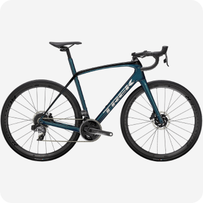

Триатлонные старты, горные серпантины или грейвел заезды по живописным
маршрутам — нужно только определиться с выбором
велосипеда и отправиться в путь.
Cannondale Systemsix
«Катайся много или мало, долго или коротко, как хочешь —
но катайся»
Эдди Меркс
Велогонщик
Шоссе
На шоссейном велосипеде можно ездить по асфальту на разных
градиентах: будь то горы или равнины. Гонки проходят в командном
пелотоне, но тренироваться можно и самостоятельно.
Грэвел
Грэвел похож на шоссейный велосипед, но конструкция рамы немного
отличается, и на нём стоят более широкие покрышки, всё для того
чтобы проехать по лёгкому бездорожью.
ТТ
ТТ — это велосипед для триатлона или раздельного старта, гооняют
на таком велике только по равнинному асфальту, велик очень быстрые
и аэродинамичный.
Велосипеды
Cervelo Caledonia-5
Cannondale Systemsix Himod

Trek Domane SL-7
Тренировки
Чтобы найти маршрут для тренировки можно воспользоваться сервисом Komoot, а записать эти
тренировки поможет приложение Strava, а также это приложение позволит построить тренировочный план.